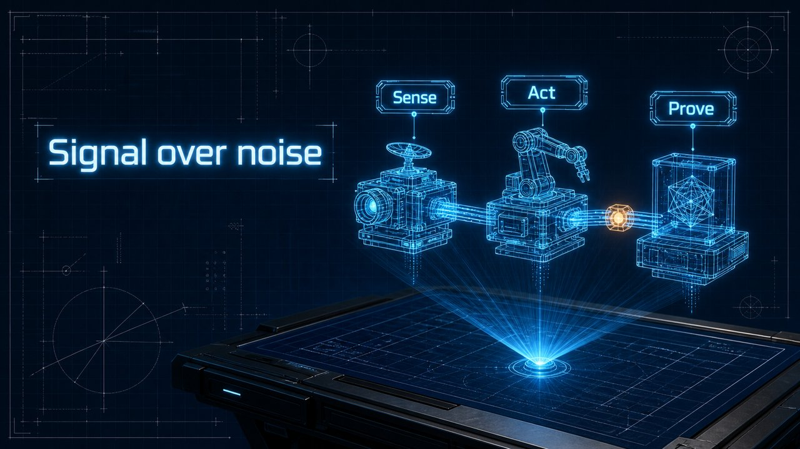

Wireframe schematic on blueprint blue — precise, engineered.
Swatch shows the same line — Signal over noise — rendered in this material, so the surface is the only variable.
SURFACE: Dark blueprint-blue background (#0A1A3F) with precise white drafting grid, dimension lines and small annotation marks. The hero is a holographic 3D wireframe machine projected above a drafting table — three glowing cyan wireframe modules connected by light conduits, each module tagged with one label on a glowing HUD chip. Fine electric-cyan (#3FD8FF) glow lines, tiny technical callouts that are ONLY geometric marks, dimension lines and digits — NEVER invent any additional Chinese words or characters beyond the quoted text below, one warm amber accent node. Title in clean futuristic type with subtle glow. Feels like a starship engineer's live hologram console — precise, high-tech, cinematic. SKELETON: auto by page role (cover / chapter / list / compare) DEVICE: the page's argument drawn as a form native to this material END: Full-bleed 16:9 — render DEVICE on the SURFACE, per the page's composition. CRITICAL: title in clean legible English; NEVER invent extra words or non-English glyphs; annotations only as marks / numbers / dimension lines; no UI, no cards, no captions.
Material recipe from the PPT-Zen 32-material library. Our own artwork.
License: CC-BY-4.0 · contributions via DCO · inspired discipline from Presentation Zen.